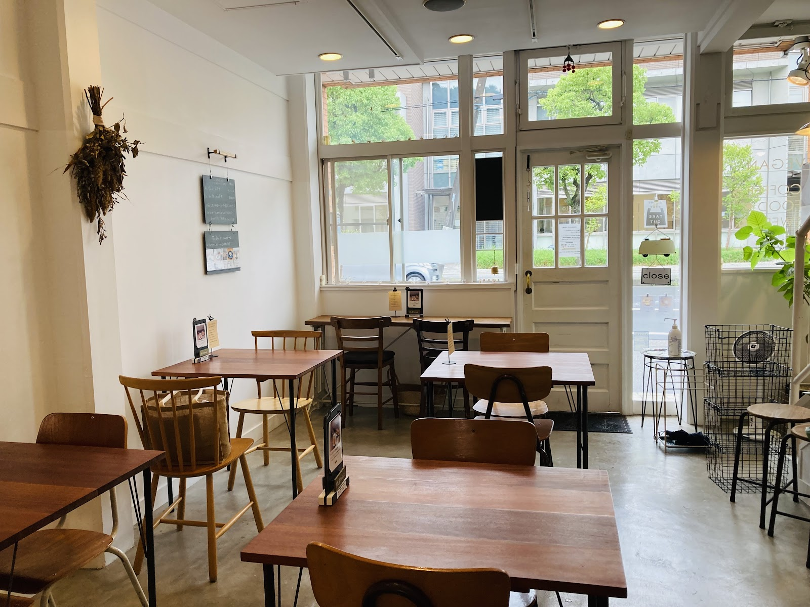

CONCEPT
Photo: Terra Mid（Google マップ）
A TIME CALLED "COTO"
「こと」という時間
うれしいこと、たのしいこと、おいしいこと。coto という店名には、そんな沢山の「こと」の中に、このお店で過ごす時間が日常の一部となりますように、という思いが込められています。心と身体にずっと心地よい食事を、丁寧にお届けしています。
02
手間を惜しまない調理
手作りのドレッシングから、土鍋で炊いた玄米ごはんまで。ひとつひとつの工程に時間をかけて、丁寧に調理しています。効率よりも、素材と手間を大切にすることを選んでいます。
Photo: Emi K（Google マップ）

03
静かで心地よい空間
白壁とコンクリート床、木のヴィンテージ家具。大きな窓から差し込む自然光と、吊るされたドライフラワー。cotoの店内には、ゆっくりと時間を過ごしていただける静けさがあります。
Photo: Terra Mid（Google マップ）